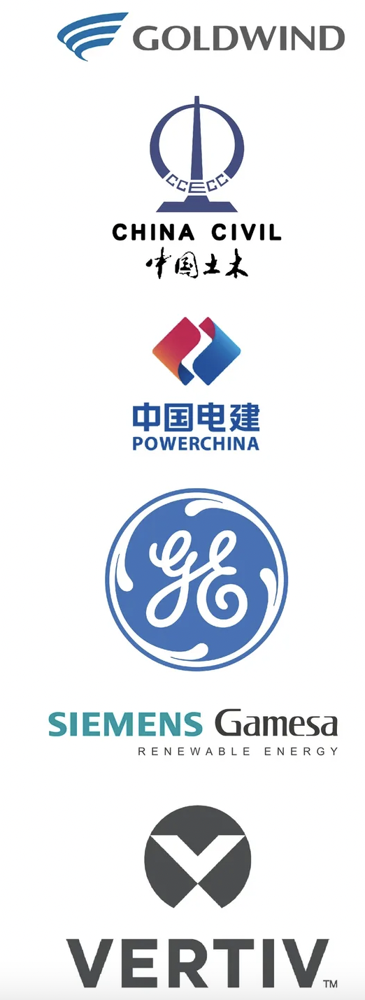
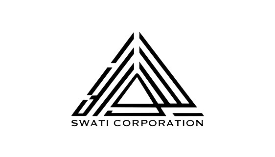

About us
Founded in 1991 as Computer Data Management, the company today has expanded into various fields; electricity, security, information technology, investments, construction and real estate. Our largest branch provides the best solutions for renewable energy, electrical transmission & grids. Along with that, our experience in construction, real estate, railways and IT remains unmatched. Over the years we have completed or contributed in enormous projects worldwide such as the Burj Khalifa, Gwadar-Jacobabad Railway and added over 1000MWs of wind power plants Our offices are located in Pakistan, United Arab Emirates, Singapore, Turkey and Hong Kong and we are partnered with finest companies of the world including, but not limited to, PowerChina, China Civil Engineering & Construction Corporation (CCeCC-CRCC), Goldwind, General Electric, Siemens Gamesa, Vertiv (Emerson). Our mission since day one remains to be the same, to provide the most sustainable form of development to the world, with 100% customer satisfaction.

SALEEM SWATI GROUP OF COMPANIES
Group of Companies:
- Swati Corporation, Pakistan
- Swati Corporation DMCC, Dubai
- Swati Corporation, Hong Kong
- Swati Corporation. Turkey
- Euroko International PVT Ltd, Pakistan
- Euroko International Pte ltd, Singapore
- Swati Investments LLC, Dubai
- Interlink LLC, Dubai
Completed Renewable Energy Projects:
- Sachal Wind Farm 50MW
- Act I Wind Farm 30MW
- Master I Wind Energy 50MW
- Harford Alternative Energy 50MW
- Jhimpir Wind Power Plant 50MW
- Sapphire Wind Farm 50MW
- Tricon Boston 150MW
- COMSATS Islamabad, Solar Energy 100kW
- Agriculture Department Punjab, 50+ solar tube wells
- + Home and commercial solar installations
Ongoing Renewable Energy Projects:
- Artistic Energy 50MW
- Indus Wind Energy Limited 50MW
- Lakeside Wind Farm 50MW
- Din Wind Farm 50MW
- Gul Ahmad Wind Farm 50MW
- Metro Wind Farm 60MW
- Tricom Wind Farm 50MW
- Liberty 1 Wind Farm 50MW
- Liberty Wind Farm 50MW
- NASDA Wind Farm 50MW
- Master II Wind Farm 60MW
- ACT II Wind Farm 50MW
Completed Aluminium & Glass Projects:
- Burj Khalifa, Dubai (Interlink LLC)
- Capital Gate, Abu Dhabi (Interlink LLC)
- Sun Tower, Abu Dhabi (Interlink LLC)
- Marina Hotel, Abu Dhabi (Interlink LLC)
- + Projects across the UAE
Ongoing Construction Projects:
- Raiwind One, Lahore
- Askari 11 High Rises, Lahore
- Ongoing Transportation Projects
- Twin City Circular Railway, Pakistan Railways
- Abu Dhabi-Fujairah, Etihad Railways
- Leh Expressway, Pakistan
Restaurants:
- Friends Cafe, Lahore
- Jurong Point, Singapore
- North Point, Singapore